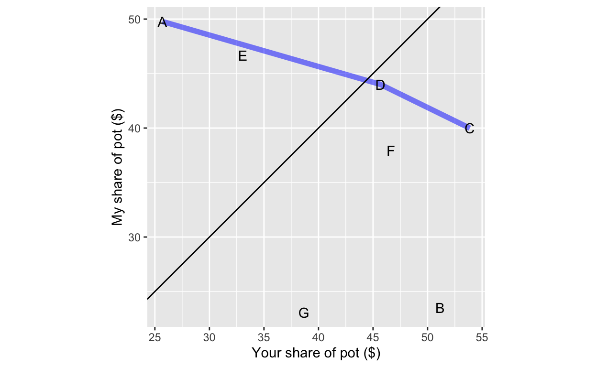
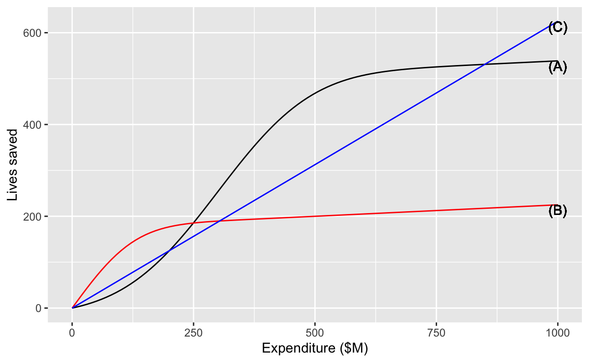

Just as the word “cooperate” means to “work together” (“co” + “operate”), the word “commensurate” means to “measure together” or to measure in the same way. Since you already know about different units and dimensions, an example in that domain can make the meaning concrete. An inch and a mile are commensurate quantities. Obviously, an inch and a mile are not equal, but you can compare them in an objective way. (An inch is 0.000015783 miles.) Similarly, a litre and a gallon are commensurate, but having the dimension L3, neither is commensurate with a quantity of dimension L.
A large number of decisions involve money in some way. It’s routine to decide whether a purchase is “worth the money.” But we do this by applying a judgment that is subjective, e.g. is it worthwhile to buy the more expensive chocolate? The decision involves comparing two incommensurate things: the money vs the good feelings that come from eating or giving a fine treat.
That things are incommensurate does not at all mean that you can’t make decisions that put one against the other, just that there is no ready, objective means to do the comparison.
As an example of how incommensurability can frustrate decision making … In the 1990s the Federal Aviation Administration (FAA) was considering a policy of requiring safety seats for infants and children on flying. (For infants, the standard was “babe in arms”: the infant could be carried on the plane and held by the caretaker, without needing a separate seat for the baby.) As you might expect, the issue was the extra costs for parents versus the increased safety of the child safety seat. The American College of Pediatrics lobbied in favor of the safety seats, travel agents lobbied against the requirement. The FAA could not reach a decision. That’s somewhat surprising because the FAA necessarily makes decisions that compare money and safety, for instance in the requirements for a passenger evacuation system or life rafts. I guess nobody is objective about babies!
After a decade or so, the FAA decided not to require the safety seats. What broke the log-jam of incommensurability was a study done of how parents would respond to the increase in cost of flying with babies. It was determined that the increased cost would push parents to drive rather than fly for short- or mid-distance trips. Driving is much more dangerous than commercial aviation and so the expected number of injuries or deaths would be larger were the safety-seat requirement instituted than if not. In other words, the comparison of lives to lives (driving risk versus flying risk) was easy, but the comparison of baby lives to money was impossible.
Over the next few classes, you will learn some mathematical techniques for decision-making in the face of incommensurate objectives (e.g. save money versus save lives). It’s important to note that there is no mathematical solution to the problem. Rather, mathematics can provide tools to clarify the trade-offs and, in much the same way as the resolution of the FAA’s policy problem, can sometimes offer a sensible way forward.
It’s worth mentioning some of the common, non-mathematical ways that people deal with incommensurates. I’ll call these “heuristics.” The Wikipedia definition of “heuristic” is pretty good:
[A]ny approach to problem solving … that employs a practical method that is not guaranteed to be optimal, perfect, or rational, but is nevertheless sufficient for reaching an immediate, short-term goal or approximation. Where finding an optimal solution is impossible or impractical, heuristic methods can be used to speed up the process of finding a satisfactory solution. Heuristics can be mental shortcuts that ease the cognitive load of making a decision.
A very common heuristic is to simply deny that any trade-off exists. This is seen most clearly in the dispute about climate change. The trade-off here is the cost of climate remediation policies (such as a carbon tax) versus the disruption and dislocation caused by the changing climate. One one side of the debate are people who deny that climate change is happening or that it is caused by human activity that can be mitigated. On the other side of the debate are people who insist that the economic changes called for will not only reduce climate-change harm but will positively affect the economy, create jobs, etc. The rest of us are in the middle, recognizing both sides of the problem.
Another heuristic is to play the trump cards of morality and human rights. Once someone claims the the issue is fundamentally one of morality, it’s hard to have conversation about the trade-offs involved. (If everyone agreed about morality, it would be easier. But one person’s divine truth is another person’s opinion.) In the US, the debate about health-care policy is not a measured discussion of how available resources should be distributed to best effect but a competition between perceived moral or ethical stances: “the government has no business making medical decisions for me” versus “affordable health care is a human right.”
It is not our place in CalcZ to enter into deep conversation about political or moral philosophy. Rather, by introducing the concepts of incommensurability and heuristic, we intend to guide the mathematical discussion toward a framework for making impossible decisions in a thoughtful and responsible manner.
It often happens that decisions involve multiple simultaneous objectives. In one context or another, each of these considerations can play a role in decision making:
This is by no means an exclusive list.
In specialized domains more specific competing objectives are often part of the design goal. For instance, consider aircraft design:
Over the next few lessons, we’re going to introduce concepts that are important to effective thinking about designing with multiple objectives as well as mathematical tools that help in balancing conflicting objectives. As you will see, there is no single “correct” or “best” solution to such problems. Indeed, there is a mathematical theorem about when there cannot be a best solution. However—and this may seem contractictory at first—some solutions are better than others. Mathematics also provides a framework for a systematic and documentable process which provides a role for the inevitable elements of human, subjective values.
First, we’ll cover elementary mathematical principles that demonstrate both that there is no single “best” solution while yet allowing some solutions to be better than others. Important vocabulary here includes “incommensuate”, dominating and non-dominating solutions(along with pareto optimality), decision frontier, and social utility function.
Second, we’ll briefly discuss some heuristics that people and groups often use, without necessarily realizing it, in solving multi-objective optimization problems. Awareness of such heuristics helps in identifying (often unstated) objectives implicit in the decision and enables you, by making them explicit, to clarify the problem and potentially open it up to useful discussion and negotiation.
Later, we’ll use the mathematics of constraints and constraint functions to support a process of rational decision making that nonetheless leaves space for subjectivity in valuing outcomes.
We start with a simple, everyday situation that illustrates many basic principles. Here’s a heads up: People are so adept at applying heuristics to this sort of problem—perhaps because it is so common—that it can be difficult at first to see that there is actually a difficulty involved.
The situation is this: there is a pot of money that you and I are going to split up. You and I have similar objectives. For each of us, getting more money is better than getting less. And our objectives conflict. If you get more, I get less. The concepts we’ll introduce apply equally well when there are three, four, or any number of people splitting the pot.
For simplicity and for generalizability to other, less obvious situations, we’ll imagine that we need to choose between several discrete policy alternatives, that is, configurations of the split. “Policy” may seem like a high-fallutin word to use for splitting the pot, but in other situations it can be exactly the right word. Moreover, the etymology of the word is right on target for the problem. A contemporary dictionary definition of “policy” is:
Policy: a course or principle of action adopted or proposed by a government, party, business, or individual
The root of the word is “city” in Greek, “polis” (πόλις—you can recognize the \(\pi\) at the beginning of the word and the “lambda” (\(\lambda\)) in the middle. The last letter is “sigma” (\(\sigma\)) although you might not recognize it since a somewhat different form is used when the letter is at the end of a word.) From “polis” comes our words “politics,” “policy,” and “police,” all of which have to do with relations among people.
For reference, here is a graph showing some policy alternatives in the yours-and-mine problem.
 For example, in policy alternative A, I would get $50 and you would get $25. Under policy F, I get $38 and you get $47. (We’ll get to the blue line in a bit.)
A dominated solution is one which both you and I would turn down in favor of a specific alternative (called the dominating solution). For instance, C dominates G: we’re both better off under C than G.
A mathematical, but not psychological, principle is that a dominated solution is never optimal. So, we can rule out any dominated solution.
An important heuristic for making a decision is fairness. In this case, fairness might be interpreted as “split the pot as evenly as possible.”
The diagonal line shows exactly even splits: you and I each get the same amount. There is no policy alternative that is exactly even, but D is the closest. So many people will claim that D is the best of all the policy alternatives, that other alternatives are “greedy” or “unethical.”
Fairness is a very attractive property of a selected policy solution, but it’s relatively easy to see that fairness is not essential.
The answers to the previous two questions point to the reasoning behind calling “fairness” a heuristic rather than a coherent basis for policy choice. To make fairness coherent, we would have to change the rule, “Be fair!” to one like, “If there’s a fairer, non-dominated solution, go for that.”
Another heuristic is can be applied if it’s possible to average between policy alternatives. Imagine if we were making the decision not just for one payout, but for many payouts in series. We might agree to pick solution D most of the time but every once in a while pick solution A to let me catch up with you.
The blue line shows the non-dominated solutions when such averaging is available. This set of non-dominated solutions is sometimes called the solution frontier. Notice that solution E, which is not dominated by any other solution, is dominated by an average between A and F.
Still other heuristics are available. Under compensation, we could agree to a choice that enables one of us to pay the other in order to balance out the take. The trajectory of a compensatory solution is along the lines of slope -1 from the non-dominated solutions.
In some settings, for instance the “economic theory of law,” the best solution under compensation is also the right choice even if compensation is not paid.
In this exercise, you will work with an optimization problem. First, we’ll ask about a mathematical solution to the problem. Next, we’ll show that the mathematical solution is not necessarily the best real-world solution, because of multiple objectives in decision making. Then we’ll show you a real-world decision-making rubric that’s widely accepted, at least among people who listen to the whole story with an open mind.
The graph shows the estimated number of lives saved by three different health-care related interventions – A, B, C – as a function of the amount of money spent on each.

You have $1,000,000,000 to spend altogether on these interventions. Your policy alternatives are all the different combinations of spending on (A), (B), and (C) that add up to $1B (or less).
How should you split up the money among the interventions? For example, we could spend $125M on B, $125M on C, and $750M on A. This would save an estimated 346 lives. Can we do better?
Imagine that we use \(x\), \(y\) and \(z\) to denote expenditure, with \(x\) spent on intervention A, \(y\) on intervention B, and \(z\) on intervention C. Altogether, the budget is \(x + y + z = \$1B\).
A general principle is this: If spending a little more on one intervention increases the output more than the loss due to spending less on another intervention, the shift in funding is worthwhile.
We found it worthwhile to move expenditure from A to C to optimize the sum of their outputs and are operating at about \(x_0 = \$500M\) and \(z_0 = \$375M\), leaving \(y=\$125M\) to spend on intervention B. Is it worthwhile to move money from A or C to B or vice versa? But first, a simpler question.
Background: The graphs are fictitious, but let’s pretend they are:
Notice that the people being affected are in different, non-overlapping groups. So moving funding from one group to another is effectively “robbing Peter to pay Paul.” If you, as a decision maker inherited a situation where \(x = \$750M\), \(y=\$125M\), and \(z=\$125M\), changing the expenditures would make one group better off (no matter how you did it!) and would make another group worse off. And imagine the headlines if you moved money from A to C or B: “Government slashes funding for newborns!”. Or perhaps an editorial: “We need to find a way to increase funding for hemophilia without cutting other life-saving spending.” This raises an important question: Is it ever worthwhile to forgo spending to save lives? How would anyone decide which lives are worth saving? Most people are uncomfortable with such questions. Yet the decisions taken by leaders, whatever they be, inevitably have a mathematically equivalent formulation which translates to the value of life.
Probably, most people would decline to make a decision comparing two lives, for instance, saving a 10-year old versus saving a 90-year old. But it is not always possible to escape such trade-offs and the people who need to take the decision need guidance about what to do. In an open society, we expect such decisions to be backed by good rationale and so we have to develop means for distinguishing between better and worse rationales.
One example comes from epidemiology and the concept of a “quality-adjusted life year” (QALY). A QALY is a measure of duration of life adjusted for the health condition of the person — a year of a person in good health is 1 QALY, but a year in a person in very poor health is less than 1 QALY.
QALYs do not solve the problem of optimizing health-related outcomes. They are an imperfect means of dealing with an impossible problem. Sometimes that is the best we can do.
Location: CalcZ/_DailyDigitals/DailyDocuments/inst/DD-142Z-35/142Z-DD-35.Rmd DD-142Z-24